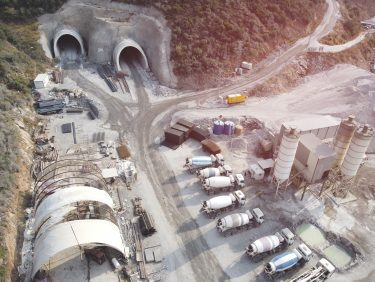
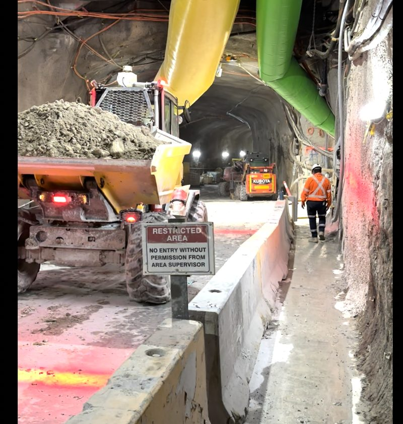
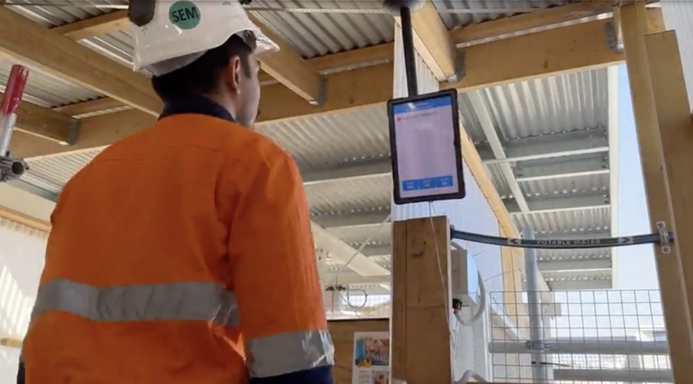
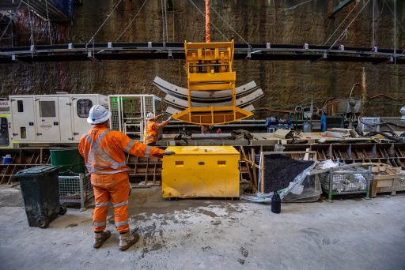
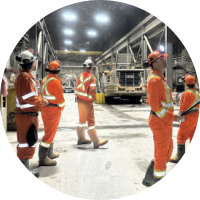

Operational Intelligence
The Next Evolution Of Operational Visibility
Operations are becoming increasingly connected, complex and data-rich.
- Workforces
- Vehicles
- Equipment
- Environmental systems
- Production technologies
- Operational processes
They continuously generate information, yet information alone does not improve outcomes.
The challenge is understanding what that information means.
Operational Intelligence helps organisations understand how conditions interact across an operation, providing the visibility, context and understanding required to improve safety, productivity and operational performance.
The Visibility Challenge
Most organisations already have access to data.
The challenge is not collecting information.
The challenge is understanding how these signals interact and what requires attention.
Understanding operational conditions in isolation often creates blind spots.
Operational Intelligence helps organisations understand the relationships between people, equipment, vehicles, environmental conditions and operational activities as they evolve in real time.
Understanding complex operations
Operations are dynamic environments where hundreds of operational variables continuously interact
People move

Equipment operates

Vehicles travel

Environmental conditions change

Production activities evolve
These interactions influence safety, productivity and operational performance every day
Operational Intelligence helps organisations understand how these factors combine to create changing operational conditions and emerging opportunities for intervention.

The Three Operational Intelligence Layers
Operations are dynamic environments where hundreds of operational variables continuously interact.
Operational Digital Twin
Create a live operational understanding of the operation
Fatal Risk Intelligence
Understand exposure before incidents occur
Production Intelligence
Understand the factors influencing operational performance
Helping project teams improve daily execution and decision-making
Operational Intelligence Across Every Level Of The Organisation

Site Teams
Real-time situational awareness

Supervisors
Improved coordination and operational oversight

Management
Performance monitoring and operational planning

Executive Leadership
Portfolio visibility and benchmarking
Owners & Stakeholders
Governance, oversight and performance assurance

From Visibility To Understanding
Operational Intelligence is not about collecting more information
It is about helping organisations understand what matters, where attention is required and how conditions are changing.